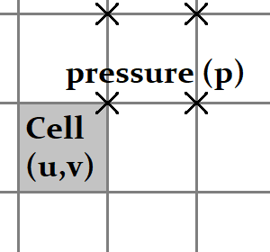

Real-time physics simulations
Created in 2024, W.I.P
I will detail some simulation techniques that can run in real-time, besides introducing quick ways to implement them.
Incompressible fluid simulation
Water and outside air can be simulated as incompressible fluids. Such simulations are often combined with a diffuse phenomenon, like the spread of smoke. To simulate incompressible fluid, we need to solve the Navier-Stokes equations. I will describe a 2D case, but it can be extended into 3D in the same manner. The governing equations are: $$ \delta_x u + \delta_y v = 0 $$ $$ \delta_t u + \delta_x (u u) + \delta_y (u v) = - \delta_x p + \mu ( \delta_{xx} u + \delta_{yy} u ) + f_x $$ $$ \delta_t v + \delta_x (v u) + \delta_y (v v) = - \delta_y p + \mu ( \delta_{xx} v + \delta_{yy} v ) + f_y $$ $$ \delta_t s + \delta_x (s u) + \delta_y (s v) = k ( \delta_{xx} s + \delta_{yy} s ) + s_e $$ where \( u,v \) are the fluid velocity component on x and y axes, \( \rho \) the density, \( p \) the pressure field, \( \mu \) the dynamic viscosity, \( f \) the volumic force (like the gravity) \( s \) a physical quantity (like smoke) transported by the fluid with \( k \) its dissipation factor and \( s_e \) a source term.
Part 1: the incompressibility constraint
The first equation is realizing the incompressiblity of the fluid. In fact, it does not contain time-derivative term. This equation can be considered seperately. Velocity-pressure algorithms (like the SIMPLE algorithm) allow to decouple the system.

Starting from the previous valid state (in which the incompressibility constraint is fulfilled), we apply the fluid dynamics without the incompressibility constraint. Then we obtain new intermediate values ( \( u_\star, v_\star \) ) for which a pressure correction is applied to bring back the incompressibility constraint. Note that the pressure is resolved on a staggered grid, to avoid the checkerboard problem. The pressure correction ( \( \tilde{p} \) ) is computed from the resolution of the system: $$ \delta_{xx} \tilde{p} + \delta_{yy} \tilde{p} = \delta_{x} u_\star + \delta_{y} v_\star $$ Finally, the new state is: $$ \begin{align} u &= u_\star - \delta_x \tilde{p} \\ v &= v_\star - \delta_y \tilde{p} \\ p &= p_\star + \tilde{p} \end{align} $$
Part 2: advection-diffusion with the finite-volume space discretization
The advection-diffusion physical phenomenon is one of the big challenges for simulations. The advection is basically the transport phenomenon. The diffusion is actually simpler to handle, because it tends to smooth quantities over time.

I will employ the finite-volume method, which is one of the most common spatial discretization methods for simulations. The finite-volume method is based on the discretization of the space by contiguous and finite volumes (or by surfaces in 2D). The state variables (like the fluid velocity \(u,v\) and \(s\)) are considered constant over each cell (volume or surface) and will be called \( Q\). The initial governing equations become a single equation now taken per cell: $$ \delta_t Q_i + \sum_{j} { F_{ij} } = 0 $$ where the fluxes \( F \) are evaluated such that the given equations are resulting to behave like the initial governing equations. The goal is then to determine the flux between cells.
The formulation of the fluxes implies some advanced mathematics. A first approach is to compute the flux as the mean flux between both sides of the edge, but the results are unstable. A second approach is to consider the up-wind flux, by taking the flux of the cell from which the quantities are "moved" from. The results are stable, but have a lot of dissipation. The chosen approach is somehow a mix of the first two approaches, using flux limiters. $$ F_{ij} = (1 - \phi) F_{ij}^{low} + \phi F_{ij}^{high} $$ where \(\phi\) is the flux limiter, \(F^{low}\) a low-order flux that is stable and \(F^{high}\) a high-order flux that is accurate.
Part 3: the time integration
A starting time integration scheme to consider is the (first order explicit) Euler method. This method is very simple and quick to implement, but it is stable only when the time-step is lower than a specific value (called the CFL condition). Using an implicit method solves the stability issue, but it requires to solve a new system of equations. With \( Q = \{ U, V, S \} \) the set of variables, the implicit method yields to: $$ Q^{new} = Q^0 + dt \left( \alpha Q^{new} + \sum_{neighbor} \alpha_n Q^{new}_n \right) $$ where \( \alpha \) is the set of coefficients from the fluxes. Hopefully, this new equation is a linear system, that can be solved using the relaxed Jacobi iterative method: $$ Q^{new,k+1} = Q^{new,k} + \frac{dt}{1 - \alpha^\star dt} \left( \alpha Q^{new,k} + \sum_{neighbor} \alpha_n Q^{new,k}_n \right) + \frac{ Q^0 - Q^{new,k} }{1 - \alpha^\star dt} $$ where \( \alpha^\star = \alpha \) for the native method, but \( \alpha^\star = 1.5 \alpha \) to ensure the TVD (Total Variation Diminishing) of the solution. \( \alpha^\star = 0 \) folds into the explicit scheme.
Results
The used method allows to quicky obtain a good fluid simulation that is robust and fast. However, some spurious behaviors can occur in the region where the fluid is moving faster than the velocity for which a particle would move through an entire cell. Even if the present method allows to have large time steps, the time step should be kept small enough to maintain a good fluid behavior.
Shallow water simulation
The goal is to simulate the waves on the free-surface of water. The simulation gives the height of the water over a two dimensional domain. This kind of simulations is a reduction of an initial 3D problem, which is the incompressible Navier-Stokes fluid simulation with a free surface. And so the reduced simulation requires less data and computations than the initial problem. Whereas the Airy wave theory is used to simulate deep water simulation, the shallow water simulation can be used when the ratio of the wavelength by the depth is around 1/20. With the shallow water approximation, the fluid velocity is considered constant over the water column.
| |
Deep water | Intermediate water | Shallow water |
|---|---|---|---|
| Velocity profile |

|

|

|
| Dispertion relation | \( \omega = \sqrt { g k } \) | \( \omega = \sqrt { g k \tanh ( g k ) } \) | \( \omega = k \sqrt { g h } \) |
The governing equations
The shallow-water equations (derived from the 3D Navier-Stokes equations) are in their conservative form: $$ \delta_t h + \delta_x (hu) + \delta_y (hv) = 0 $$ $$ \delta_t (hu) + \delta_x (h u^2 + \frac{1}{2} g h^2) + \delta_y (huv) = - gh \delta_x (z) $$ $$ \delta_t (hv) + \delta_x (huv) + \delta_y (h v^2 + \frac{1}{2} g h^2) = - gh \delta_y (z) $$ where \( h \) is the water height, \( u,v \) is the mean velocity of the water on the water column, \( z \) is the sea-bed elevation. The mathematical properties of this system make it hard to simulate. Indeed, this system is an hyperbolic partial differential set of equations. Especially, discontinuities will appear when a wave is going to break. Let consider the 'x' direction alone: $$ \delta_t \begin{bmatrix} h \\ hu \\ hv \end{bmatrix} + \begin{bmatrix} 0 & 1 & 0 \\ gh - u^2 & 2u & 0 \\ 0 & 0 & u \end{bmatrix} \cdot \delta_x \begin{bmatrix} h \\ hu \\ hv \end{bmatrix} = \begin{bmatrix} 0 \\ - gh \delta_x (z) \\ 0 \end{bmatrix} $$ We recognize a system of coupled transport equations. The eigenvalues of the coupling matrix are \( u - \sqrt{gh} \), \( u \), \( u + \sqrt{gh} \). An analytic solution exists on the associated Riemann problem, also called the dam-break problem on this particular case. This can be used later to implement the spatial integration.
I now allow the fluid to have a non-null viscosity. The viscosity can be embebed in multiple ways. I consider one of the possible viscous shallow-water equations, which is: $$ \delta_t h + \delta_x (hu) + \delta_y (hv) = 0 $$ $$ \delta_t (hu) + \delta_x (h u^2 + \frac{1}{2} g h^2) + \delta_y (huv) + \delta_x T^{xx} + \delta_y T^{xy} = - gh \delta_x (z) - \frac{k}{1 + k h / 3 \mu} u $$ $$ \delta_t (hv) + \delta_x (huv) + \delta_y (h v^2 + \frac{1}{2} g h^2) + \delta_x T^{yx} + \delta_y T^{yy} = - gh \delta_y (z) - \frac{k}{1 + k h / 3 \mu} v $$ where \( \mu \) is the dynamic viscosity and \( c \) the sea-bed friction coefficient, \( T \) the kinematic viscous tensor and \( k \) the seabed friction coefficient. Adding viscosity behaves like a dissipation term. The kinematic viscous tensor is roughtly approximated with: $$ T = - \mu h \begin{bmatrix} \delta_x u & \delta_y u \\ \delta_x v & \delta_y v \end{bmatrix} $$
Part 1: the space discretization with the compute of the fluxes
I will employ the finite-volume method, whereby the discrete values represent averages of the state variables over the cells. Having good fluxes is crucial to ensure a realistic behavior and its robustness. After some tries, Rusanov method (based on the MUSCL scheme) appeared to be the best compromise in regards with the computationnal cost, accuracy and robustness, accordingly to my requirements. The flux along the spatial coordinate x, given L et R both sides of an edge, is: $$ Fx_{L \rightarrow R} = \frac{l}{2} \begin{bmatrix} h_L u_L \\ h_L u_L^2 + 0.5 g h_L^2 \\ h_L u_L v_L \end{bmatrix} + \frac{l}{2} \begin{bmatrix} h_R u_R \\ h_R u_R^2 + 0.5 g h_R^2 \\ h_R u_R v_R \end{bmatrix} + \frac{l s}{2} \begin{bmatrix} h_L \\ h_L u_L \\ h_L v_L \end{bmatrix} - \frac{l s}{2} \begin{bmatrix} h_R \\ h_R u_R \\ h_R v_R \end{bmatrix} $$ where \( s = \max(|u_L|,|u_R|) + \sqrt{g \max(h_L,h_R)} \) and \( l \) the edge's length.
The viscous terms are treted a bit differently, as they do not significantly contribute to the hyperbolic part of the governing equations.
Work in progress ...
Part 2: the time integration
Like with the fluid simulation, I will use an implicit integration scheme. With \( Q = \{ h, hu, hv \} \) the state variables, \( F(Q) \) given by the summation of the fluxes divided by the cell's surface and \( S(Q) \) given by the source term, the implicit method yields to the implicit equation: $$ Q^{new} = Q^0 + dt \left( F( Q^{new} ) + S( Q^{new} ) \right) $$ This equation can be solved using quasi-Newton methods, where the Jacobian matrix of \( F + S \) is approximated such that its inverse is fast to compute. My idea is to transform the Jacobian matrix into a diagonal matrix, while keeping the spectral radius. I couldn't find this idea used in the literature, enve if the "Riemann" fluxes are based on the similar idea. That said, I didn't try yet other quasi-Newton methods for searching roots. Then, the new values of the state variables \( Q^{new} \) is computed with the following iterative scheme: $$ Q^{new,k+1} = Q^{new,k} + \Lambda^{-1} ( dt ( F(Q^{new,k}) + S(Q^{new,k}) ) + Q^0 - Q^{new,k} ) $$ $$ \Lambda = 1 + dt \left( \sum \frac{s}{2 dx} \right) $$
Results
Firstall, we can compare the obtained simulation with theoretical results. The dam-break problem admits a theorical solution, shown here with the lighter lines. The red lines show the velocity magnitude of the water column (dark red is the simulation, light red the theorical value). The simulation introduces some numerical damping effects, notably where the state variables are discontinuous.
We should keep in mind that the shallow-water equations are not valid for the deep water waves. I can demonstrate it by comparing the result of the shallow-water equations with the linear deep water waves solution. The strong blue is a full 2D Navier-Stokes simulation with a free surface. The green line is the deep-water wave theoretical solution. The lighter blue is the shallow-water simulation, that diverges with the solution given by the deep-water equations. The velocity profile is shown in red. We can see that the velocity profile is not constant over water columns, while the shallow-water equation considers it constant.
Finally, we should combine both the deep-water and shallow-water behaviors to have convincing results.
Work in progress ...
Constraint dynamics (X-PBD)
The X-PBD (Extended - Position Based Dynamics) is a simulation technique in which the constraints (like a fixed-distance constraint or a kinematic join constraint) are solved by successive iterations, and run directly with the position of the physical objects. This method was been popularized by Matthias Muller. The main advantage is that this method is quick to implement and it rapidly shows good results with good flexibility. However, it can fail to some instabilities and the results may depend on the time step.
Work in progress ...